31,05%
Episodios B con coincidencia directa ANM
Análisis espacial de 409 episodios térmicos frente a información institucional de minería, licenciamiento ambiental e hidrocarburos. La lectura identifica coincidencias, proximidades y concentraciones relativas; no atribuye causalidad.
El escenario B reúne 409 episodios. Cada institución se evalúa por separado: un mismo episodio puede coincidir con más de una huella, por lo que los conteos no son aditivos.
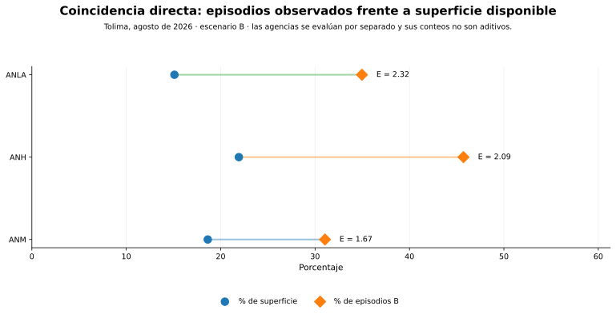
NASA FIRMS distribuye detecciones de fuego activo y anomalías térmicas derivadas de sensores como MODIS y VIIRS [1]. Una detección no equivale automáticamente a un incendio confirmado ni a un área quemada.
Se parte de hotspots FIRMS correspondientes a agosto de 2026.
B es principal: 1.537 hotspots; A conserva 2.134 como sensibilidad.
Las detecciones se agrupan con umbral espacial de 1.000 m y temporal de 12 h.
Directa, ≤1 km, 1–5 km y >5 km para cada institución.
Para polígonos se calcula observado, esperado y enriquecimiento territorial.
Se identifican sitios con repetición temporal sin confundirlos con episodios individuales.
scan × track no se interpreta como área quemada.
Las cicatrices requerirían validación independiente, por ejemplo con Sentinel-2/Landsat e índices espectrales.
El análisis distingue títulos y solicitudes. La ANM señala que el título minero constituye el instrumento jurídico mediante el cual se adquiere el derecho a explorar y explotar, mientras la propuesta constituye un trámite previo [2]. En esta publicación, ninguna de las dos figuras se interpreta como evidencia automática de operación puntual.
assets/maps/anm_a3.jpg.
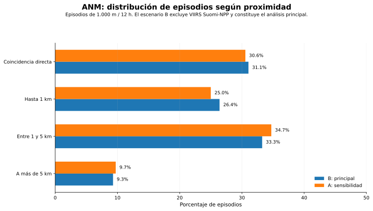
Proximidad de episodios a la huella ANM.
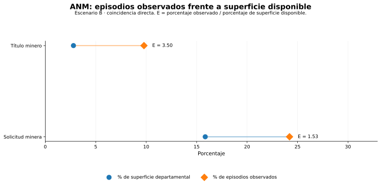
Episodios observados frente a superficie disponible.
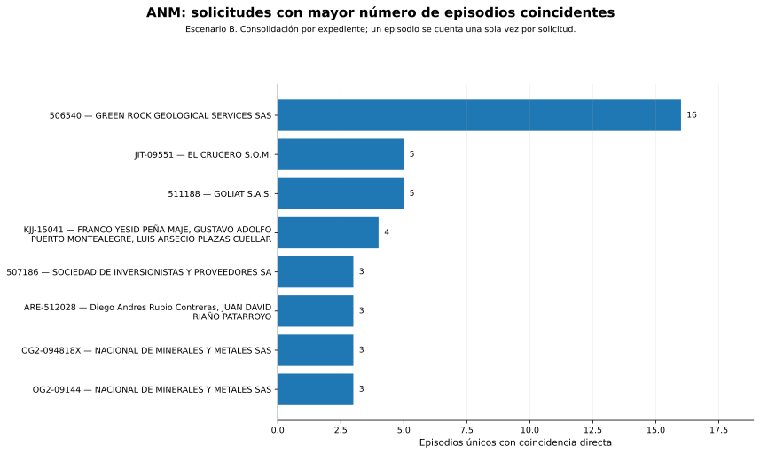
Solicitudes principales por episodios coincidentes.
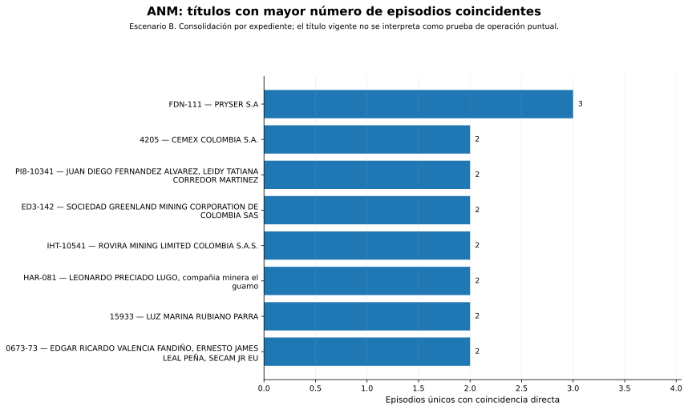
Títulos principales por episodios coincidentes.
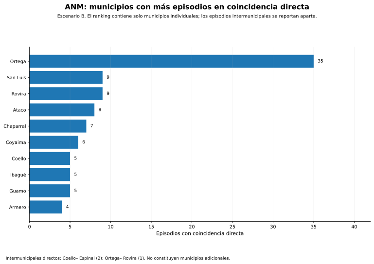
Municipios con mayor coincidencia directa.
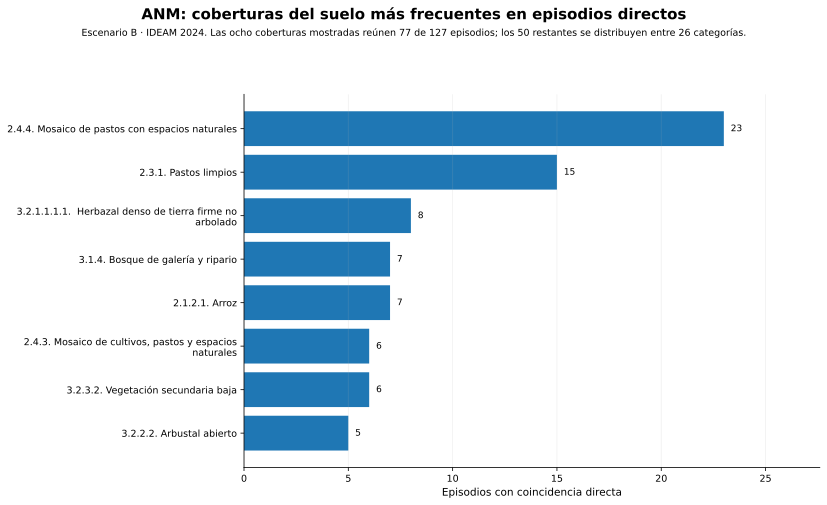
Coberturas del suelo más frecuentes.
La ANLA define el seguimiento como la verificación de obligaciones, medidas y comportamiento ambiental de proyectos, obras o actividades sujetos a instrumentos de manejo [3]. La presencia de un expediente o geometría de seguimiento no identifica por sí sola el origen de una fuente térmica.
assets/maps/anla_a3.jpg.
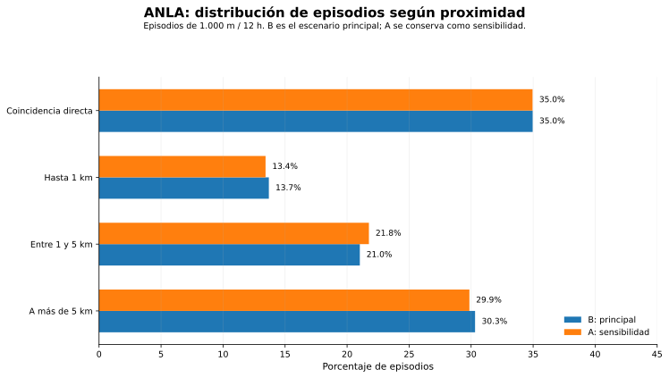
Proximidad de episodios a la huella ANLA.
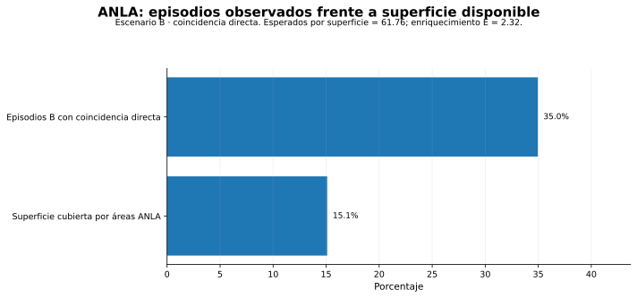
Episodios observados frente a superficie disponible.
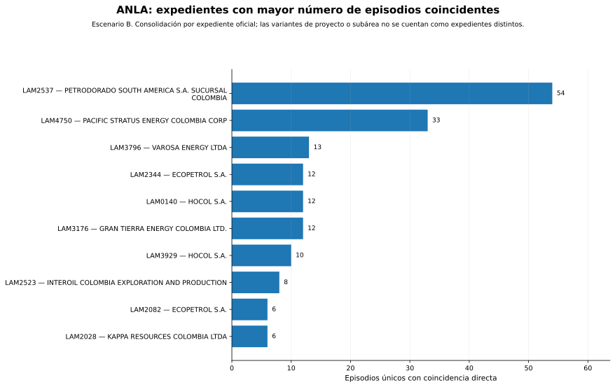
Expedientes ANLA con mayor número de episodios coincidentes.
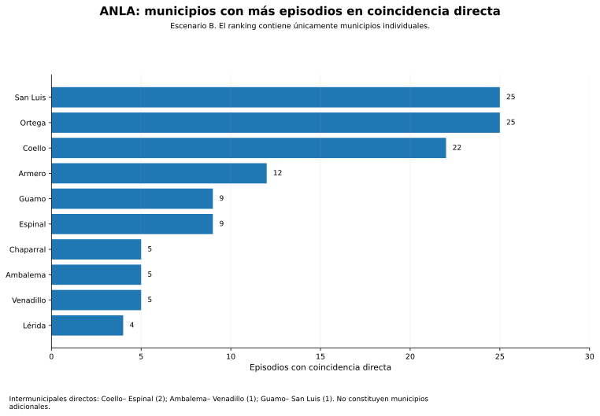
Municipios con mayor coincidencia directa.
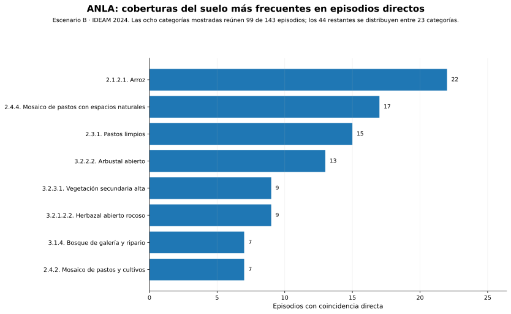
Coberturas del suelo más frecuentes.
El Mapa de Tierras de la ANH representa la distribución, delimitación y clasificación de áreas hidrocarburíferas para exploración y producción; la actualización usada corresponde al 6 de agosto de 2026 [4]. Bloques, yacimientos y pozos son objetos distintos y se interpretan separadamente.
assets/maps/anh_a3.jpg.
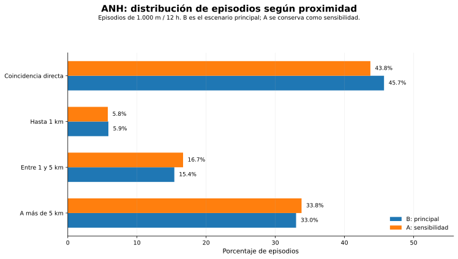
Proximidad de episodios a la huella ANH.
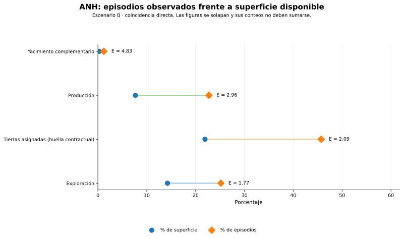
Observado frente a superficie: exploración, producción y yacimientos.
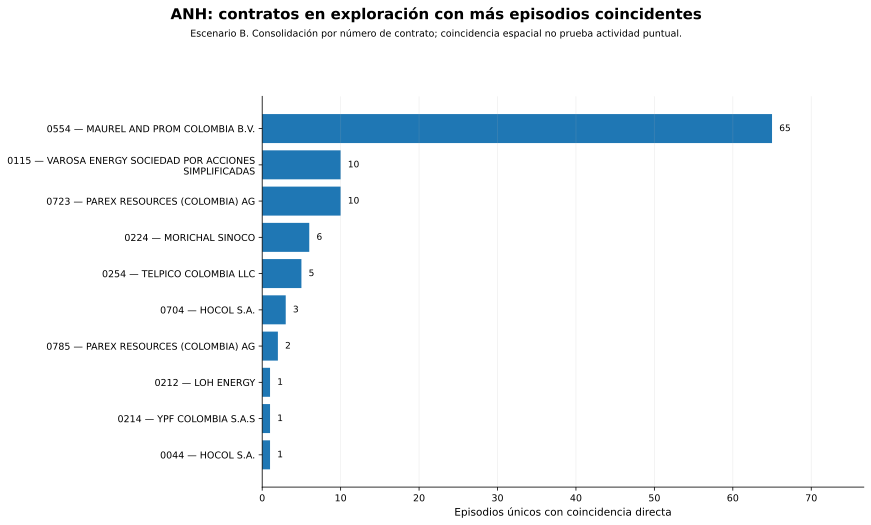
Contratos de exploración con más episodios coincidentes.
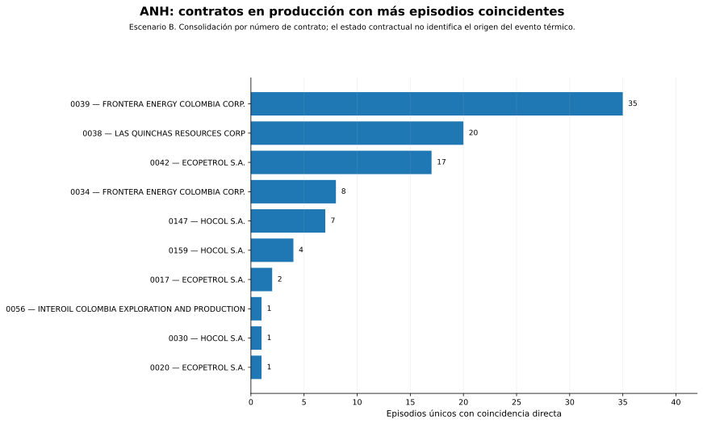
Contratos de producción con más episodios coincidentes.
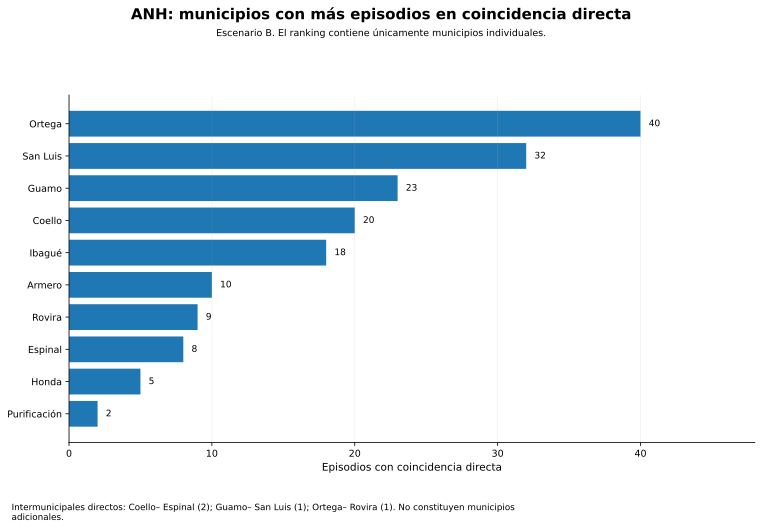
Municipios con mayor coincidencia directa.
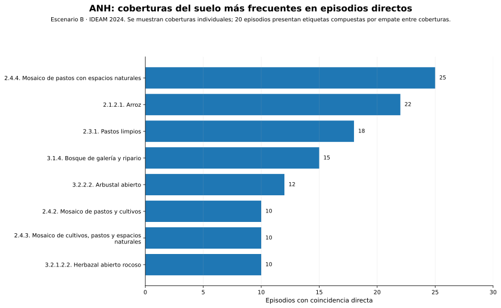
Coberturas del suelo más frecuentes.
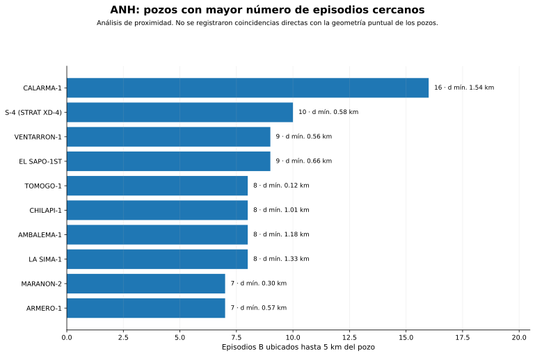
Pozos con mayor número de episodios dentro de 5 km.
La recurrencia se calcula aparte de los episodios individuales y describe repetición temporal de señales; no identifica su causa.
El repositorio incluye las tablas derivadas, capítulos metodológicos y documentación editorial. Los JPEG cartográficos de alta resolución se incorporan por separado.
CSV por institución y comparación transversal.
Abrir carpeta de datosTexto consolidado con reglas de análisis y límites interpretativos.
Abrir documentoDecisiones de estructura, no aditividad y control de calidad.
Abrir auditoríaLas referencias externas definen sensores y figuras institucionales; los resultados numéricos provienen del paquete analítico auditado del proyecto.